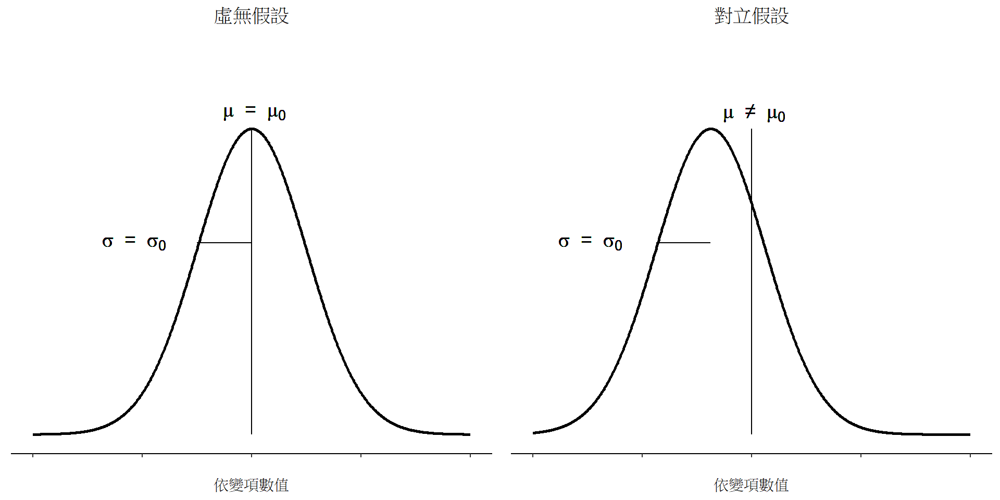
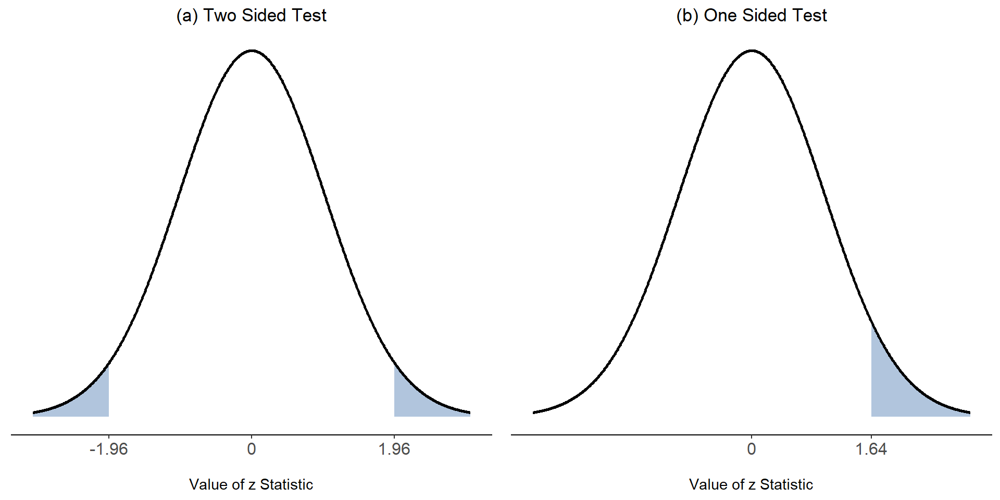
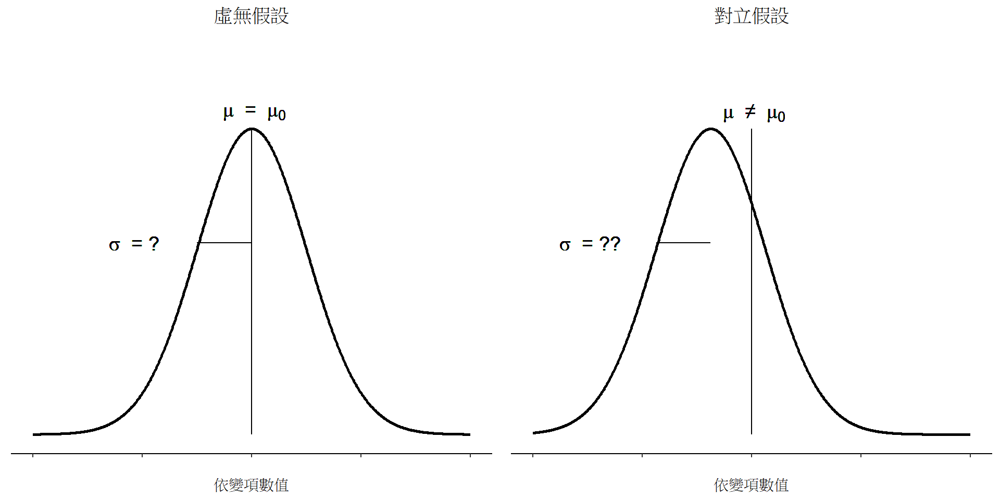
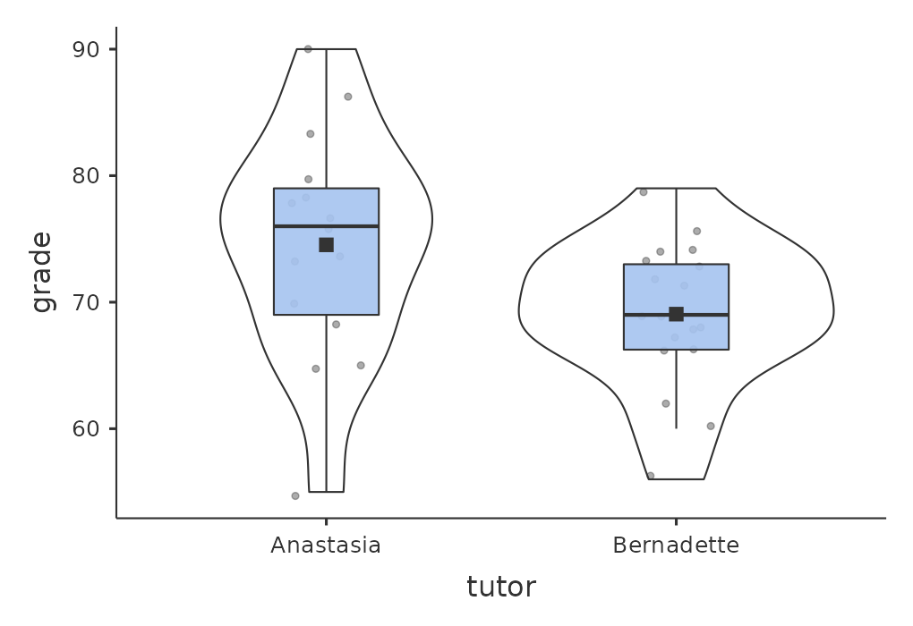
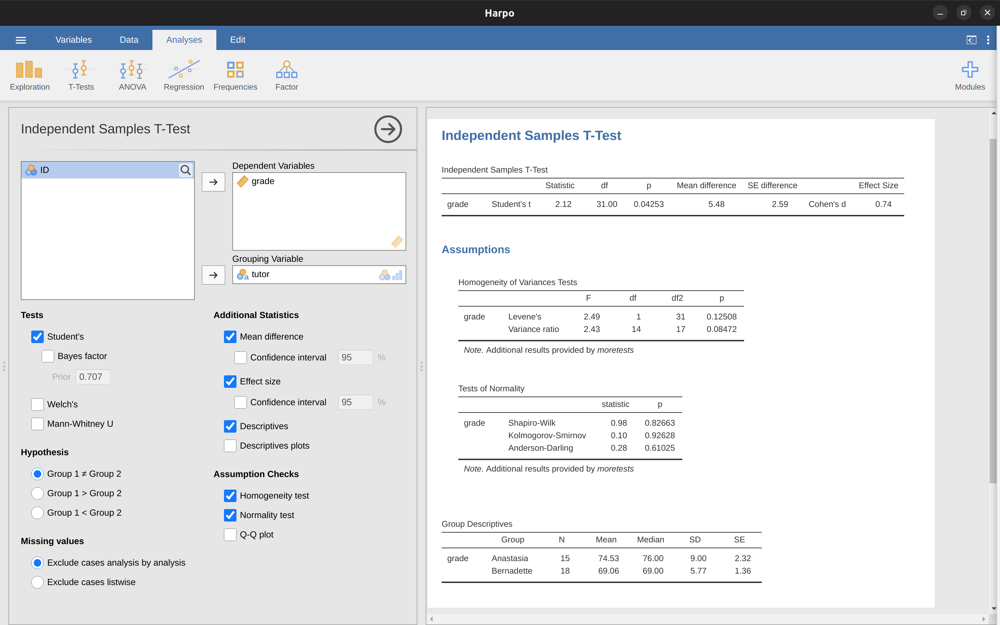
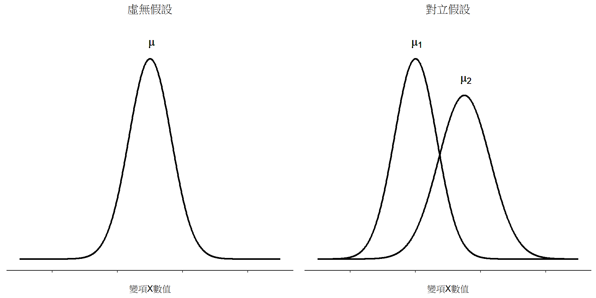
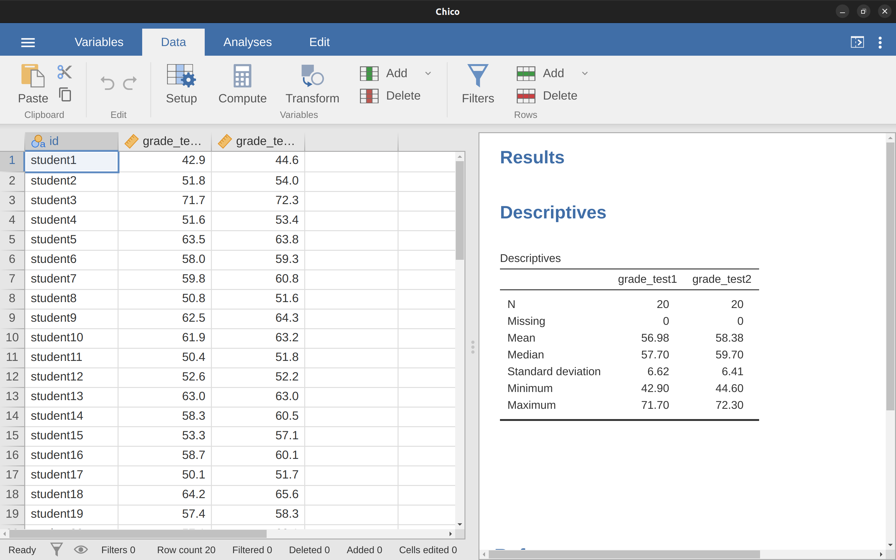
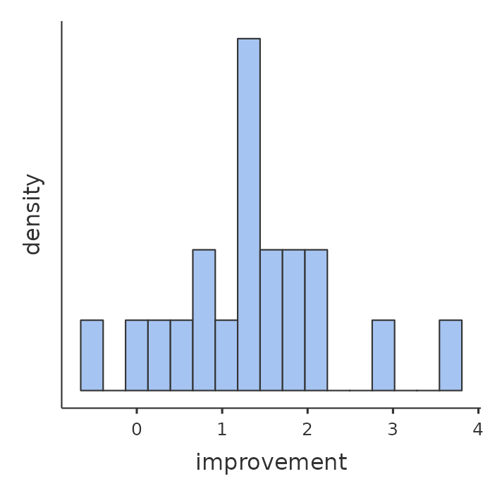
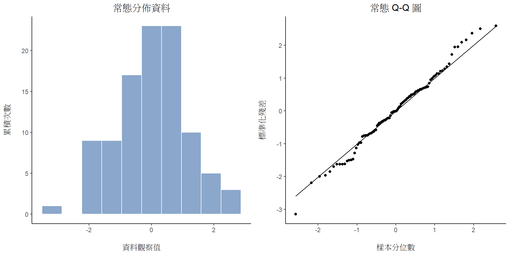

11 比較單一與兩組平均值
譯者註 20230415初步以ChatGPT-4完成翻譯，內容待編修。
單元 10 討論的檢定方法適用於依變項是名義尺度，獨變項也是名義尺度的資料。現實世界的許多研究問題都是要處理這種資料，所以卡方檢定的用途非常廣泛。然而，現實統計問題更有可能遇到的資料是，依變項為等距尺度或者更高階的連續尺度，研究目標是比較兩個獨立組之間的依變項平均值。例如，某位心理學家想知道有小孩的夫婦焦慮程度會不會比沒小孩的夫婦更高，或者相對於不聽音樂的人們，聽音樂會不會降低人們的工作記憶容量。閱讀一篇醫學論文，我們會想知道一種新藥物會不會增加或降低血壓。某位農業研究人員也許想知道磷肥會不會造成澳大利亞原生植物枯萎死亡。1就這些問題來說，依變項都是一種連續的、等距尺度或比例尺度變項，獨變項則是一種二元的「分組」變項。也就是說，處理資料的研究人員想比較兩組平均值的差異。
比較平均值的標準推論統計方法是 t 檢定，至於要使用那種t檢定則取決於問題內容。因此，本章重點是介紹各種類型的 t 檢定：單一樣本 t 檢定、獨立樣本 t 檢定和相依樣本 t 檢定。每種檢定方法都會討論單側與雙側檢定，還有 t 檢定的標準效果量 Cohen’s d。每個t檢定最後還有討論適用條件，以及可能違反這些條件時的補救方法。但是，在介紹t檢定之前，我們先介紹一下 z 檢定。
11.1 單一樣本z檢定
這一節要介紹統計學裡最無用的一種統計檢定方法：z 檢定。嚴格來說，這種檢定方法幾乎沒什麼研究人員會使用。學習z檢定的真正用途是，這個方法是學習 t 檢定前相當方便的墊腳石，但是 t 檢定可能是最被過度使用的統計學工具。
11.1.1 使用z檢定前的注意事項
我們先用一個簡單的例子介紹 z 檢定如何運作的概念：我有一位朋友 Zeppo 老師準備按照常態分佈曲線為他的基礎統計學課程修課學生打分數。假如這門課程的平均分數是 \(67.5\)，標準差是 \(9.5\)，修課學生有數百人，其中有 20 位還修了心理學課程。出於好奇心，我想知道這些學生的成績是否與其他學生的成績一致，也就是這20位學生的平均分數也是 \(67.5\)，還是他們的成績比全體平均分數更高或更低？這些學生的成績存於Zeppo老師分享給我的 zeppo.csv 資料檔(lsj資料集Zeppo)，開啟 jamovi 的 ‘Exploration’ - ’Descriptives’的設定視窗，按照 單元 4 學過的方法，就能得到平均值為 \(72.3\)。2
50 60 60 64 66 66 67 69 70 74 76 76 77 79 79 79 81 82 82 89
看起來有修心理學課程的學生成績比全部同學的好一些。樣本平均值 \(\bar{X}=72.3\) 比假設的母群平均值 \(\mu=67.5\) 要高了不少分，但是，樣本量 \(N=20\) 其實並不是很大，也許這只是純粹的巧合。
為了能做出合理的評估，寫出我所知道的細節能幫助讀者了解。首先知道的是樣本平均值為 \(\bar{X}=72.3\)，如果我相信這20位學生的標準差與班上其他學生的標準差相同，那麼母群標準差就是 \(\sigma=9.5\)。同時我還相信 Zeppo 老師是按常態分佈曲線給分，這20位學生的成績分佈也應該符合常態分佈。
接著我要具體呈現如何從資料取得能做判斷的資訊。我對此問題的假設可用這20位學生來源母群平均值 \(\mu\) 表示，而這個值是未知的。在有資料的當下，我想知道是不是 \(\mu=67.5\) ？因為這是我目前所知道的，需要設定一個假設檢定程序來解答這個問題。樣本資料以及可能的來源母群分佈顯示在 圖 11.1 。畫出統計圖還不能解答我的問題嗎？ 現在需要學習更進一步的統計知識了。
11.1.2 z檢定的統計假設
假設檢定的第一步是確定虛無假設和對立假設分表是代表什麼結果，以這個問題來說不難了解。這裡的虛無假設 \(H_0\) 是，心理系學生的成績母群平均值 \(\mu\) 等於 \(67.5\%\)，對立假設是母群平均值不等於 \(67.5\%\)。若是用數學符號表示，這些假設的白話說明就變成了：
\[ H_0:\mu= 67.5 \] \[ H_1:\mu \neq 67.5 \]
不過，使用數學記號表示，其實不大能讓大家更好理解統計假設，這只是呈現完成資料分析後會得到什麼簡記方法。要被檢定的虛無假設 \(H_0\) 和對立假設 \(H_1\) 的視覺圖像都呈現在 圖 11.2 。配合上一段的背景說明，視覺圖像除了能我們了解統計假設的重點在於結果是符合那個平均值(或者說期望值)，還有提供一些有用的資訊，特別是以下兩點：：
- 20位學生成績分佈符合常態分佈。
- 20位學生成績分佈的真實標準差 \(\sigma\) 等於 9.5。
我們暫時先將這些條件當成是絕對沒錯的事實，許多現實世界的研究問題，這類絕對可信的背景條件通常是不可能成立的。若是要靠這些條件執行假設檢定，只能當做所有條件都是成立的。要確認這些條件是否成立，其實需要做些檢查程序，只是為了方便解說z檢定程序，目前先暫時跳過。

接下來是設定一個可靠的檢定統計量，用來診斷成績分佈是符合\(H_0\) 還是 \(H_1\)。因為兩種假設都與母群平均值 \(\mu\)有關，樣本平均值 \(\bar{X}\)是我們能用來檢定的絕佳參考點，也就是計算樣本平均值 \(\bar{X}\) 與虛無假設預測的母群平均值之間的差異，在這個例子是 \(\bar{X} - 67.5\)。若要類推到同樣的分析問題，以\(\mu_0\) 代指虛無假設主張的母群平均值，這樣一來要計算的就是
\[\bar{X}-\mu_0\]
如果這個差異值等於或非常接近於0，虛無假設似乎是可接受的結論。如果這個差異值完全不等於0，那麼虛無假設似乎不太可能是有意義的結論。不過，這個差異離0多遠才有可能拒絕 \(H_0\) 呢？
為了搞清楚，我們需要耍一點小手段，就是之前提到的樣本資料服從常態分佈，以及母群標準差 \(\sigma\) 的值是已知的。若是成績分佈確實符合虛無假設，真正的平均值確實是 \(\mu_0\)，這些事實支持母群分佈是平均值為 \(\mu_0\)，標準差為 \(\sigma\) 的常態分佈。3
好啦，若真的那麼順利， \(\bar{X}\) 的分佈能告訴我們什麼事情呢？根據 小單元 8.3.3 討論過的中央極限定理，平均數 \(\bar{X}\) 的取樣分佈也是常態分佈，並且等於母群平均值 \(\mu\)。只是這個取樣分佈的標準差 \(se(\bar{X})\)–也被稱為平均值的標準誤差–真面目是4
\[se(\bar{X})=\frac{\sigma}{\sqrt{N}}\]
讓我們進一步了解這個技巧。運用 小單元 4.5 學過的標準分數，樣本平均數 \(\bar{X}\)可以轉換成標準分數，因為通常被寫成z，這裡可以改寫為 \(z_{\bar{X}}\)。改寫符號是為了方便記住，這裡正在計算的是樣本平均值的標準分數，不是單一觀察值的標準分數。如此一來，樣本平均值的 z 分數
\[z_{\bar{X}}=\frac{\bar{X}-\mu_0}{SE(\bar{X})}\]
也可以寫成
\[z_{\bar{X}}=\frac{\bar{X}-\mu_0}{\frac{\sigma}{\sqrt{N}}}\]
這個 z 分數就是這裡要用的檢定統計值，使用這個檢定統計值的好處是，像所有 z 分數一樣，它符合標準常態分佈：5
\[z_{\bar{X}} \sim Normal(0,1) \]
換句話說，無論原始資料的測量尺度是什麼，解讀z統計值的方法都是一樣的：z值代表觀察到的樣本平均值 \(\bar{X}\) 與虛無假設預測的母群平均值 \(\mu_0\)相差了多少標準誤。更棒的是，無論原始分數的母群參數是多少，z 檢定的 5% 棄絕域始終不變，如同 圖 11.3 的圖解。所以在以前大多數研究者和學生都要用手算統計的時代，可以從 表 11.1 找出要報告的p值。也可以反過來使用手算得出的z統計值，從教科書的附表找出臨界值。
| critical z value | ||
| desired \(\alpha\) level | two-sided test | one-sided test |
| .1 | 1.644854 | 1.281552 |
| .05 | 1.959964 | 1.644854 |
| .01 | 2.575829 | 2.326348 |
| .001 | 3.290527 | 3.090232 |
11.1.3 手作z檢定
現在，正如我之前提到的，z-test在實際應用中幾乎從不使用。這個測試在實際生活中如此罕見，以至於jamovi的基本安裝不包含內置功能。然而，這個測試是如此地簡單，以至於手動進行這個測試非常容易。讓我們回到Dr Zeppo課程的資料。在載入成績資料後，我需要做的第一件事是計算樣本均值，我已經做到了(\(72.3\))。我們已經有了已知的母群標準差(\(\sigma = 9.5\))，零假設所指定的母群平均值(\(\mu_0 = 67.5\))的值，以及樣本大小(\(N=20\))。

接下來，讓我們計算（真實）標準誤（可輕鬆用計算機完成）：
\[ \begin{split} sem.true & = \frac{sd.true}{\sqrt{N}} \\\\ & = \frac{9.5}{\sqrt{20}} \\\\ & = 2.124265 \end{split} \]
最後，我們計算我們的z分數：
\[ \begin{split} z.score & = \frac{sample.mean - mu.null}{sem.true} \\\\ & = \frac{ (72.3 - 67.5)}{ 2.124265} \\\\ & = 2.259606 \end{split} \]
此時，我們會傳統地在臨界值表中查詢 \(2.26\) 的值。我們原來的假設是雙邊的（我們對心理學生在統計學上表現得比其他學生好或差沒有任何理論基礎），因此我們的假設檢驗也是雙邊的（或者是兩尾的）。從我先前顯示的小表中，我們可以看到 \(2.26\) 大於需要在 \(\alpha = .05\) 的顯著性水平下具有顯著性的臨界值 \(1.96\)，但小於需要在 \(\alpha = .01\) 的水平下具有顯著性的值 \(2.58\)。因此，我們可以得出結論，我們可以這樣寫：
在心理學學生的樣本中，平均成績為 \(73.2\)，假定真正的人口標準差為 \(9.5\)，我們可以得出結論，心理學學生在統計學上的得分與課程平均分有顯著差異（\(z = 2.26, N = 20, p<.05\)）。
11.1.4 z檢定的適用條件
正如之前的單元，所有統計檢定皆建立於特定的適用條件之上，這些條件有的是基於合理的考量，有的則可能不太合適。這裡介紹的「單樣本z檢定」也有三條適用條件：
常態性。一般來說，z檢定必須假定母群分佈符合常態分佈。6這是一個相對合理的條件，若有疑慮，我們有方法可以進行驗證（請參考 小單元 11.9 ）。
獨立性。第二條要求構成資料集的觀察值互不相關，或者說，觀察值之間的相關性看不出符合特定模式。這一點不容易直接用統計方法檢驗，而是要依賴嚴謹的實驗設計確保此條件成立。一個明顯違反此條件的不合理例子是，在資料集多次「複製貼上」同一個觀察值，導致得到的資料是基於單一測量結果的巨大“樣本”。實際上，每一個觀察值應該是從目標群體裡完全隨機選出，各別測量而得到的。這項條件在有些研究實務難以完全滿足，但是我們能透過精心安排的研究設計儘可能減少觀察資料之間的相關影響分析結果。
母群標準差已知。z檢定的第三個條件是，研究者必須知道母群的真實標準差。這個條件實在是難以滿足。在現實世界的資料分析中，極少遇到可知母群標準差\(\sigma\)，卻對母群平均值\(\mu\)一無所知的情況。也就是說這個條件基本上難以成立。
有鑒於母群標準差已知實在太天方夜譯，我們需要知道除了z檢定的其他統計方法。接著我們要離開z檢定這個看不到生機的沙漠，進入有獨角獸、仙女和小矮人的神奇國度，那就是t檢定！
11.2 單一樣本t檢定
深思熟慮一番後，我們還是無法輕易假定修Zeppo教授課程的心理學系學生成績標準差與其他科系學生的標準差相等。如果我們已經認為不同科系學生的平均成績有差異，為何還要假定他們的標準差相等呢？基於這個理由，我認為不應該預先假定已經知道真正的\(\sigma\)是多少，這麼一來就違反z檢定的適用條件。如此一來，我們的分析工作似乎回到了原點。然而，我們還是有其他方法可用。最重要的是，我們能用一樣的原始資料估計母群標準差，也就是9.52。換言之，雖然我不能假定\(\sigma = 9.5\)，但我可以提出\(\hat{\sigma} = 9.52\)。
這是個不錯的開始。你也許會想到，使用樣本估計的標準差9.52來進行z檢定也可以吧，而不用假定\(\sigma = 9.5\)，這樣一來依然可以得到顯著的結果。這樣的檢定結果雖然接近正確，但非完全無懈可擊。由於現在是用母群標準差的估計值計算統計值，因此需要調整一下我們對真實母群標準差不確定的想法：或許現在這筆資料僅是一次偶發事件…或許真實的母群標準差其實是\(11\)。如果這是真的，就要假定\(\sigma=11\)來進行z檢定，分析結果就不會顯著了。到底真實的母群標準差是多少，是需要解決的問題。

11.2.1 深入認識單一樣本t檢定
這道史詩級難題在 1908 年被 William Sealy Gosset 解決了。當時他是任職於吉尼斯啤酒公司的化學分析師（參考 Box (1987)），當時的吉尼斯公司禁止員工以個人名義公開發表任何有統計分析的報告，因為公司認為這類報告會透露商業機密，因此Gosset 用了化名“學生”發表他的研究成果。這是為什麼今天t檢定的正式名稱是「學生t檢定」(Student’s t-test)。Gosset 的關鍵貢獻是，他發現即使我們不完全確定母群標準差的確切數值，如何確保取樣分佈充分匹配真實資料，他提出的解決方法是適當調整取樣分佈7。t檢定的檢定統計值是t統計值(t statistic)，如同z檢定的計算方法，我們假定虛無假設的真實平均值是\(\mu\)，然而樣本平均值是\(\bar{X}\)，根據母群標準差的估計值\(\hat{\sigma}\)，t統計值的計算公式是：
\[ t=\frac{\bar{X}-\mu}{\frac{\hat{\sigma}}{\sqrt{N}}} \]
從公式組成來看，t統計值與z統計值的唯一不同是前者 用母群標準差的估計值 \(\hat{\sigma}\) ，代替真實的母群標準差\(\sigma\)。如果這個估計值總和\(n\)個觀察值，這樣的樣本分佈就會符合一個自由度是\(n-1\)的 t 分佈。 t 分佈的長相和常態分佈非常相近，但是兩側尾部的密度稍微高一點。這個特性在 小單元 7.6 曾經提過，也在 圖 11.5 給讀者視覺化解釋。不過，各位讀者應該注意到自由度越大，t 分佈會越來越逼近標準常態分佈，而這就是許多研究者期盼的適用工具，若是樣本量達到\(N = 70,000,000\)，母群標準差的「估計值」就幾乎等於真實的母群標準差了？所以如果有大樣本資料可以分析，t 檢定的分析結果幾乎完全等於z檢定，用數學推導來看也是如此！
11.2.2 實作單一樣本t檢定
正如你所預期的，t檢定的機制幾乎與z檢定的機制完全相同。因此，沒有必要繁瑣地展示如何使用低級命令進行計算。它與我們之前所做的計算幾乎相同，只是使用了估計的標準差，然後使用t分佈而不是常態分佈來測試假設。因此，我將直接跳到顯示如何實際進行t檢定。jamovi配備了一個專門用於t檢定的分析，非常靈活（它可以運行許多不同類型的t檢定）。它非常簡單易用；您需要做的只是指定“分析”-“T檢定”-“單樣本T檢定”，將您感興趣的變量（X）移動到“變量”框中，並在“假設”-“測試值”框中輸入零假設的平均值（‘67.5’）。很容易。見@fig-fig11-6，除了我們稍後會提到的其他事項之外，它還提供了t檢定統計量=2.25，自由度為19，相關的p值為\(0.036\)。
此外，報告了其他兩個可能會引起關注的指標：95％置信區間和效應大小的測量值（我們稍後會談論效應大小）。看起來相當簡單。現在我們該如何處理這個輸出呢？既然我們假裝真的在乎我們的例子，我們很高興地發現結果在統計上是顯著的（即p值低於0.05）。我們可以通過這樣的報告方式來表達結果：
心理學生的平均成績為 \(72.3\)，略高於平均成績\(67.5\) (\(t(19) = 2.25\)，\(p = .036\))。平均分差為\(4.80\)，\(95\%\)置信區間為\(0.34\)至\(9.26\)。
…其中 \(t(19)\) 是一個簡寫符號，代表具有 \(19\) 自由度的 t 統計量。話雖如此，人們通常不會報告信賴區間，或者使用比我在此展示的更簡短的形式進行報告。例如，看到信賴區間被包含在報告均值差之後的統計資訊中也不是很少見，就像這樣：
\[t(19)=2.25, p = .036, CI_{95} = [0.34, 9.26]\]
在這半行內塞這麼多專業術語，你就知道這必定是非常聰明的。8
11.2.3 單一樣本t檢定的適用條件
那麼單一樣本 t 檢定有什麼適用條件呢？因為 t 檢定基本上就是一個移除了已知標準差假設的 z 檢定，你應該不會意外t檢定具有和z檢定一樣的適用條件，只是少了已知母群標準差這一條：
常態性。我們仍然要假定母群分佈是常態的 9，如同z檢定的適用條件的描述，我們有標準方法可以檢查這種假設是否符合，如果這種假設被違反，還有其他的測試方法可以替代（[檢驗非常態資料]）。
獨立性。同樣地，樣本的觀察值必須是來自彼此獨立的測量條件。詳細說明請參考z檢定的適用條件。
總而言之，這兩個條件並非難以達成，因此單一樣本 t 檢定在實務中常被用於比較樣本平均數與假定的母群平均數有沒有差異。
11.3 獨立樣本t檢定
儘管單樣本 t 檢定有其用處，但它並不是 t 檢定的最典型範例。10更常見的情況是當你有兩個不同的觀測組時。在心理學中，這往往對應於研究中的兩個不同條件，每個條件對應於一個不同的參與者組。對於研究中的每個人，您測量一些感興趣的結果變量，而您要問的研究問題是這兩組是否具有相同的母群平均值。這就是獨立樣本 t 檢定所設計的情況。
11.3.1 使用獨立t檢定的狀況
假設我們有 33 名學生參加 Harpo 博士的統計學講座，而 Harpo 博士沒有按曲線分數。實際上，Harpo 博士的評分有點神秘，因此我們對整個課程的平均成績一無所知。該課程有兩名導師，Anastasia 和 Bernadette。Anastasia 的輔導課有 \(N_1=15\) 名學生，Bernadette 的輔導課有 \(N_2=18\) 名學生。我感興趣的研究問題是 Anastasia 和 Bernadette 誰是更好的導師，或者他們的教學效果沒有太大的差異。Harpo 博士將課程成績發送給我，存在 harpo.csv 文件中。像往常一樣，我會將文件加載到 jamovi 中，查看它包含哪些變量 - 有三個變量，ID、grade 和 tutor。grade 變量包含每個學生的成績，但它未按正確的測量層級屬性導入到 jamovi 中，因此我需要更改它以使其被視為連續變量（參見 小單元 3.6）。tutor 變量是一個因子，表示每個學生的導師是 Anastasia 還是 Bernadette。
我們可以使用 ‘Exploration’ - ‘descriptives’ 分析計算平均值和標準差，這裡是一個不錯的摘要表格（表 11.2）。
| mean | std dev | N | |
| Anastasia's students | 74.53 | 9.00 | 15 |
| Bernadette's students | 69.06 | 5.77 | 18 |
為了讓你更清楚知道正在發生什麼，我在 jamovi 中繪製了盒形圖和小提琴圖，並在圖表中添加了平均分數的小實心方塊。這些圖表顯示了兩位助教的學生成績分佈 (圖 11.7)。
11.3.2 深入認識獨立t檢定
獨立樣本 t 檢定有兩種不同的形式，學生 t 檢定和韋爾奇 t 檢定。原始的學生 t 檢定是兩者中比較簡單的一種，但比韋爾奇 t 檢定依賴更為嚴格的假設。假設你現在要進行雙側檢定，目標是確定兩個「獨立樣本」是否來自具有相同平均值（虛無假設）或不同平均值（對立假設）的母群。當我們說「獨立樣本」時，我們真正意思是這兩個樣本之間沒有特殊的關係。現在可能還不太明白，但等到我們談到成對樣本 t 檢定時，這一點就會更清楚了。現在，讓我們指出，如果我們有一個實驗設計，其中參與者是隨機分配到兩組中的一組，而我們想比較這兩組對某個結果度量的平均表現，那麼獨立樣本 t 檢定（而不是成對樣本 t 檢定）就是我們所需要的。

好的，讓我們讓 \(\mu_1\) 代表第一組的真實母群平均值（例如 Anastasia 的學生），而 \(\mu_2\) 則是第二組的真實母群平均值（例如 Bernadette 的學生）11，通常我們讓 \(\bar{X_1}\) 和 \(\bar{X_2}\) 代表這兩個組別的觀察樣本平均值。我們的虛無假設是兩個母群平均值是相同的（\(\mu_1 = \mu_2\)），而對立假設則是它們不相同（\(\mu_1 \neq \mu_2\)）（圖 11.8）。以數學術語來說，這是：
建立一個能夠處理這種情況的假設檢驗，我們開始注意到，如果零假設成立，那麼兩個母群平均數之間的差異就是 正好 為零，\(\mu_1-\mu_2 = 0\)。因此，診斷性的檢定統計量將基於兩個樣本平均數之間的差異。因為如果零假設成立，那麼我們預期 \(\bar{X}_1 - \bar{X}_2\) 要非常接近於零。然而，就像我們在單樣本測試中看到的那樣（即單樣本 z 檢定和單樣本 t 檢定），我們必須精確地確定這種差異應該接近於零。解決問題的方法幾乎相同。我們計算一個標準誤差估計值（SE），然後將平均值之間的差異除以這個估計值。因此，我們的 t 檢定統計量 將具有以下形式：
\[t=\frac{\bar{X_1}-\bar{X_2}}{SE}\]
我們需要找出這個標準誤差估計值是什麼。這比我們之前介紹過的兩個檢定複雜得多，因此我們需要更仔細地研究它的運作方式。
11.3.3 標準差的合併估計
在原始的「Student t 檢定」中，我們假設兩個群體有相同的母群標準差。換句話說，無論母群平均數是否相同，我們假設母群標準差是相同的，\(\sigma_1 = \sigma_2\)。由於我們假設兩個標準差相同，因此我們省略下標，將它們都稱為 \(\sigma\)。我們該如何估計這個值？當我們有兩個樣本時，該如何建構標準差的單一估計值？答案是，基本上我們將它們加以平均。好吧，有點。實際上，我們取一個加權平均的變異數估計值，它被用作我們的合併變異數的估計值。分配給每個樣本的權重等於該樣本中的觀察數量減去 1。
[其他技術細節12]
11.4 平均數檢定的更多細節
無論你想以哪種方式思考，現在我們已經有了我們的樣本標準差的匯集估計值。從現在開始，我會忽略那個奇怪的p小標，只稱這個估計值為\(\hat{\sigma}\)。很好。現在讓我們回到考慮這個該死的假設檢驗，好嗎？我們計算這個匯集估計的整個原因是我們知道它將在計算標準誤時非常有用。但標準誤是什麼？在單樣本t檢驗中，它是樣本平均值的標準誤，\(se(\bar{X})\)，因為\(se(\bar{X}) = \frac{\sigma}{\sqrt{N}}\)，這就是我們的t統計量的分母。然而，這一次，我們有兩個樣本均值。而我們特別感興趣的是兩者之間的差異\(\bar{X}_1-\bar{X}_2\)，因此，我們需要除以的標準誤實際上是均值差的標準誤。
[其他技術細節13]
正如我們在單樣本檢定中所看到的那樣，只要虛無假設為真且測試的所有假設都符合，這個 t 統計量的取樣分佈就是一個 t 分佈。然而，自由度略有不同。通常，我們可以把自由度視為資料點數減去約束數。在這個情況下，我們有 N 個觀察值（\(N_1\) 在樣本 1 中，\(N_2\) 在樣本 2 中），和 2 個約束（樣本均值）。因此，這個檢定的總自由度為 \(N-2\)。
11.4.1 jamovi實作
不出所料，您可以很容易地在 jamovi 中進行獨立樣本 t 檢定。我們測試的結果變量是學生成績，而組是根據每個課程的導師定義的。因此，您可能不會對 jamovi 中的相應分析（“分析”-“T 檢定”-“獨立樣本 T 檢定”）感到意外，只需將成績變量移動到“依變變量”框中，將導師變量移動到“分組變量”框中，如 圖 11.9 所示。

這裡的輸出形式非常熟悉。首先，它告訴您運行的是什麼測試，以及使用的依變量的名稱。然後報告測試結果。與上次一樣，測試結果包括 t 統計量、自由度和 p 值。最後一部分報告了兩件事：它給出了置信區間和效應大小。我會稍後談論效應大小。然而，現在我應該談論置信區間。
很重要要清楚這個信賴區間到底是什麼意思，它是兩組平均數之間的差異的信賴區間。在這個例子中，Anastasia的學生平均分為74.53，而Bernadette的學生平均分為69.06，因此兩組平均數之間的差異是5.48。但是，兩個母群的平均數差異可能比這個還大或者還小。在@fig-fig11-10中報告的信賴區間告訴你，如果我們重複進行這個研究，那麼在95％的時間裡，真正的平均數差異會在0.20到10.76之間。回顧一下@sec-Estimating-a-confidence-interval了解信賴區間的意思。
在任何情況下，兩組之間的差異是顯著的（僅僅）。因此，我們可以使用以下文本編寫結果:
Anastasia 課程的平均成績為 \(74.5\%\)（標準差為 \(9.0\)），而 Bernadette 課程的平均成績為 \(69.1\%\)（標準差為 \(5.8\)）。 學生的獨立樣本 t 檢定顯示此 \(5.4\%\) 差異是顯著的 \((t(31) = 2.1, p<.05, CI_{95} = [0.2, 10.8], d = .74)\)，表明學習成果存在真正的差異。
注意到我在統計區塊中包含了信心區間和效應大小。人們並不總是這樣做。至少，您應該期望看到t統計量、自由度和p值。所以您應該至少包含像這樣的內容：\(t(31) = 2.1, p< .05\)。如果統計學家得到了他們想要的結果，那麼每個人都會報告信心區間，可能還有效應大小測量，因為它們是有用的知識。但現實並不總是按照統計學家的期望運作，所以您應該根據您認為會幫助讀者的情況進行判斷，如果您正在撰寫科學論文，那麼應根據期刊的編輯標準進行決策。有些期刊希望您報告效應大小，而有些則不是。在某些科學社區中，報告信心區間是標準做法，在其他社區中則不是。您需要找出您的觀眾期望什麼。但是，僅僅為了清晰起見，如果您正在上我的課，我的默認立場是通常值得包括效應大小和信心區間。
11.4.2 t統計值正負的意義
在談到t-test的假設之前，我們先來討論t-test在實務上的使用上還有一個重要的觀點。第一個觀點是關於t統計量的符號（即它是正數還是負數）。當學生第一次進行t-test時，他們常常會擔心結果出現負值，不知道如何解釋。實際上，當兩個人獨立地進行實驗時，獲得的結果幾乎相同，但其中一個人的t值是負的，而另一個人的t值是正的，這種情況是很常見的。假設您正在進行雙側檢定，那麼p值是相同的。仔細檢查後，學生們會發現置信區間也是相反的。這是完全正常的。每當這種情況發生時，你會發現兩種不同的結果是由稍微不同的t-test方法引起的。這裡發生的事情非常簡單。我們在這裡計算的t統計量總是具有以下形式
\[t=\frac{\text{平均值1-平均值2}}{SE}\]
如果 “平均值 1” 大於 “平均值 2”，則 t 統計量將為正數，而如果 “平均值 2” 大於 “平均值 1”，則 t 統計量將為負數。同樣地，jamovi 報告的置信區間是 “(平均值 1) 減去 (平均值 2)” 差異的置信區間，這將是計算 “(平均值 2) 減去 (平均值 1)” 差異置信區間的相反。
好的，當你考慮這件事時，其實很簡單，但現在考慮比較阿納斯塔西亞班和伯納德班的 t 檢定。我們應該把哪一個稱為 “mean 1”，哪一個稱為 “mean 2”。這是任意的。然而，你真的需要將其中之一指定為 “mean 1”，另一個為 “mean 2”。不出所料，jamovi 處理這個的方式也相當任意。在本書早期的版本中，我試圖解釋這一點，但過了一段時間後，我放棄了，因為這並不是真正重要的事情，老實說我自己也記不清楚。每當我得到一個顯著的 t 檢定結果，並且我想找出哪個均值較大，我不會嘗試通過查看 t 統計量來找出答案。我為什麼要這麼做？這是愚蠢的。最簡單的方法就是查看實際的組均值，因為 jamovi 的輸出實際上就顯示了它們！
這是重要的一點。因為 jamovi 向您顯示的內容實際上並不重要，所以我通常會嘗試以使數字與文本相符的方式報告 t 統計量。假設我想在報告中寫道：「阿納斯塔西亞的課程的成績高於伯納德的課程。」這種措辭意味著阿納斯塔西亞的組排在第一位，因此把阿納斯塔西亞的課程對應到第一組是有道理的。如果是這樣，我會寫成 阿納斯塔西亞的班级成绩比伯纳德的班级更高\((t(31) = 2.1，p = .04)\)。
（在現實中我不會真的用下劃線來強調 “higher”，我只是這樣做是為了強調 “higher” 與正的 t 值對應）。另一方面，假設我想使用的措辭是 Bernadette 的課程排在第一位，如果這樣的話，把她的課程作為第一組更有意義，這樣的話報告應該寫成：Bernadette 的課程的成績比 Anastasia 的課程更低 \((t(31) = -2.1, p = .04)\)。
最後要注意的是，這種寫法只適用於t檢定，對於卡方檢定、F檢定或本書中提到的大多數檢定而言並無意義。因此不要過度將這個建議泛化！這裡我真的只是在談論t檢定，而不是其他任何東西！
11.4.3 獨立樣本平均數檢定的適用條件
和單樣本t檢定一樣，學生t檢定也有三個假設，其中一些在單一樣本t檢定的適用條件已經提到：
- 常態性。和單樣本t檢定一樣，需要假設資料是常態分佈。具體來說，需要假設兩組資料都符合常態分佈。14在[檢查樣本常態性]一節中，我們將討論如何檢查常態性，而在[檢驗非常態資料]一節中，我們將討論可能的解決方案。
- 獨立性。再次需要假設觀測值是獨立抽樣的。在學生t檢定的情況下，有兩個方面需要考慮。首先，需要假設每個樣本內的觀測值是相互獨立的（和單樣本t檢定一樣）。但是，我們還需要假設兩個樣本之間沒有相互依賴關係。例如，如果實驗中同一個人被不小心分配到不同的條件下（例如，同一個人不小心被允許報名參加不同的條件下的實驗），那麼就存在一些跨樣本的依賴關係需要考慮。
- 方差的同質性（也稱為“等變異性”）。第三個假設是，兩組的母群標準差是相同的。可以使用Levene檢定來測試這個假設，我們稍後會在[檢查同質變異性的假設]中談到。然而，如果您擔心這個假設，有一個非常簡單的解決方法，我們將在下一節中討論。
11.5 獨立樣本t檢定(Welch t檢定)
在實際應用中，使用學生 t 檢定的最大問題是前一節所列的第三個假設。它假設兩組具有相同的標準差，但在現實生活中，這種情況很少發生。如果兩個樣本的平均值不同，為什麼我們期望它們具有相同的標準差呢？實際上，我們沒有理由期望這個假設成立。我們稍後會談到如何檢查這個假設，因為它在幾個不同的地方會出現，不僅僅是 t 檢定。但現在我會談論一下不依賴這個假設的 t 檢定 (Welch, 1947) 的不同形式。圖 11.10 以圖形方式說明了 Welch t 檢定對資料的假設，以與 圖 11.8 中的學生 t 檢定進行對比。我承認在談診斷之前談治療有點奇怪，但事實上 Welch 檢定可以在 jamovi 的「獨立樣本 t 檢定」選項中指定，所以這可能是談論它的最好地方。

Welch 檢定與 Student 檢定非常相似。例如，在 Welch 檢定中，我們使用的 t 統計量的計算方式與 Student 檢定非常相似。也就是說，我們取樣本平均數之間的差異，然後除以其標準誤的估計：
\[t=\frac{\bar{X}_1-\bar{X}_2}{SE(\bar{X}_1-\bar{X}_2)}\]
主要的差異在於標準誤的計算方式不同。如果兩個母群具有不同的標準差，那麼嘗試計算合併的標準差估計是完全荒謬的，因為你正在平均蘋果和橘子。15
[其他技術細節 16]
\[SE(\bar{X}_1-\bar{X}_2)=\sqrt{\frac{\hat{\sigma}_1^2}{N_1}+\frac{\hat{\sigma}_2^2}{N_2}}\]
為什麼是這樣計算的原因超出了本書的範圍。對我們而言重要的是，從 Welch t-test 得出的 t 統計量實際上與從 Student t-test 得出的 t 統計量略有不同。
Welch 與 Student 之間的第二個差異在於，計算自由度的方式非常不同。在 Welch 測試中，「自由度」不再必須是一個整數，並且它不太符合「資料點數量減去約束數量」的啟發式方法，這是我到目前為止一直在使用的。
11.5.1 jamovi實作
如果你在上面的分析中勾選了 Welch test 的核取方塊，則會得到以下結果（見@fig-fig11-11）。
這個輸出結果的解釋應該很明顯。您可以像讀取學生t檢驗的結果一樣讀取Welch檢驗的輸出。你有你的描述統計資料，測試結果和其他信息。所以這一切都相當容易。
除了，除了… 我們的結果不再顯著。 當我們執行Student t-test時，我們得到了一個顯著的效應，但在相同的資料集上進行的Welch測試並不顯著 \((t(23.02) = 2.03, p = .054)\)。 這是什麼意思？ 我們應該恐慌嗎？ 天空是否燃燒？ 可能不是。 一個測試顯著，而另一個測試不顯著本身並沒有什麼意義，特別是因為我有點編造了這些資料。 通常，不要試圖解釋或解釋\(.049\)和\(.051\)之間的p值差異。 如果這種情況在現實生活中發生，這些p值之間的差異幾乎肯定是由於偶然性引起的。 重要的是，您在選擇使用哪種測試時要仔細思考。 Student測試和Welch測試各有優勢和劣勢。 如果兩個母群確實具有相等的變異數，則Student測試比Welch測試略具備更高的功效（較低的II型錯誤率）。 但是，如果它們的變異數不同，則Student測試的假設就會被違反，您可能無法信任它。 您可能會得到更高的I型錯誤率。 因此，這是一個權衡。 但是，在現實生活中，我通常更喜歡使用Welch測試，因為幾乎沒有人認為母群變異數是相同的。
11.5.2 Welch檢定的適用條件
Welch檢定的假設與學生t檢定的假設非常相似（請參閱獨立樣本平均數檢定的適用條件），唯一不同的是Welch檢定不需要假定變異數相同。這只剩下常態性和獨立性的假設，這些假設的細節對於Welch檢定和學生t檢定來說是相同的。
11.6 相依樣本t檢定
不論是談論學生 t 檢定或韋爾奇 t 檢定，獨立樣本 t 檢定都適用於具有兩個互相獨立樣本的情況。當參與者被隨機分配到其中一個實驗條件時，自然會出現這種情況，但這對於其他類型的研究設計提供了一個非常差的近似。特別是，在重複測量設計中，每個參與者都在兩個實驗條件下測量（對於相同的結果變量），並不適合使用獨立樣本 t 檢定進行分析。例如，我們可能會對聆聽音樂是否降低人們的工作記憶容量感興趣。為此，我們可以在兩種情況下測量每個人的工作記憶容量：有音樂和無音樂。在這樣的實驗設計中，17每個參與者出現在 兩個 組中。這需要我們以不同的方式來解決問題，即使用配對樣本 t 檢定。
11.6.1 示範資料
這次我們要使用的資料集來自Chico博士的課程。18 在她的課堂上，學生要參加兩次主要考試，一次在學期初，一次在學期後。據她所說，她開的課很難，大多數學生都覺得很有挑戰性。但她認為，通過設置困難的評估，學生會被鼓勵更加努力地學習。她的理論是，第一次考試對學生來說是一個“提醒”，當他們意識到她的課有多難時，他們會為第二次考試更加努力，取得更好的成績。她的觀點正確嗎？為了測試這個問題，讓我們將chico.csv文件導入到jamovi中。這次，jamovi在導入期間做了一個好工作，正確地分類了變量的測量水平。chico資料集包含三個變量：一個id變量，用於識別課程中的每個學生，grade_test1變量記錄第一次考試的學生成績，grade_test2變量則是第二次考試的成績。
如果我們看一下 jamovi 的試算表，似乎這個課程很難（大多數的成績都在50%到60%之間），但從第一次測驗到第二次測驗似乎有進步的趨勢。
如果我們快速查看一下描述性統計，在 圖 11.12 中，我們可以看到這種印象似乎得到了支持。在所有20個學生中，第一次測驗的平均成績為57%，但第二次測驗的平均成績為58%。但是，考慮到標準差分別為6.6%和6.4%，這種進步感覺起來可能只是虛假的，也可能只是隨機變異。當你看到在@fig-fig11-13a中繪製的平均值和置信區間時，這種印象得到了加強。如果我們僅僅依靠這個圖表，看看這些置信區間有多寬，我們會認為學生表現的明顯改善純粹是偶然的。

然而，這種印象是錯的。要知道原因，請看 圖 11.13 (b) 中顯示的評分1和評分2的散佈圖。在這個圖中，每個點對應於一個給定學生的兩個成績。如果他們的評分1（x座標）等於他們的評分2（y座標），那麼該點就會落在直線上。在線上方的點是第二次測試表現更好的學生。重要的是，幾乎所有的資料點都在對角線以上：幾乎所有的學生似乎都有一些提高，即使只有一點點。這表明我們應該關注每個學生在一次測試和下一次測試中所取得的進步，並將其作為我們的原始資料。為此，我們需要創建一個新變量，用於表示每個學生所取得的進步，並將其添加到 chico 資料集中。最簡單的方法是計算一個新變量，使用表達式 grade test2 - grade test1。
我們一旦計算了這個新的改進變量，就可以繪製一個直方圖，顯示這些改進分數的分佈，如@fig-fig11-14所示。當我們觀察這個直方圖時，很明顯這裡有真正的進步。絕大多數的學生在第二次測試中得分比第一次高，這反映在幾乎整個直方圖都在零以上。

11.6.2 深入認識相依樣本t檢定
根據先前的探索，讓我們思考如何建立一個適當的 t 檢定。一個可能的方法是嘗試使用grade_test1和grade_test2作為感興趣的變量進行獨立樣本 t 檢定。然而，這顯然是錯誤的，因為獨立樣本 t 檢定假定兩個樣本之間沒有特定的關係。然而，由於資料中的重複測量結構，這顯然是不正確的。使用我在上一節中介紹的語言，如果我們試圖進行獨立樣本 t 檢定，我們會混淆 樣本內 差異（這是我們想要測試的）和 樣本間 變異性（這是我們不想要的）。
解決這個問題的方法很明顯，我希望，因為我們已經在前一節中完成了所有的艱苦工作。我們不是對grade_test1和grade_test2進行獨立樣本t檢驗，而是對內部差異變量improvement進行單樣本t檢驗。稍微形式化一下，如果\(X_{i1}\)是第i個參與者在第一個變量上獲得的分數，\(X_{i2}\)是同一個人在第二個變量上獲得的分數，那麼差異分數是：
\[D_i=X_{i1}-X_{i2}\]
請注意，差異分數是變量1減去變量2，而不是反過來，因此如果我們希望改進對應到一個正值的差異，我們實際上需要將「測試2」作為「變量1」。同樣，我們會說 \(\mu_D = \mu_1 - \mu_2\) 是此差異變量的母群平均值。因此，為了將其轉換為假設檢驗，我們的虛無假設是此平均差異為零，而對立假設是它不是
\[H_0:\mu_D=0\] \[H_1:\mu_D \neq 0\]
這假設我們進行的是雙邊檢定。這與我們描述一樣，進行一樣的假設檢定。唯一的不同之處在於零假設所預測的特定值為0。因此，我們的 t 統計量可以用類似的方式來定義。如果我們讓 \(\bar{D}\) 代表差異得分的平均值，那麼
\[t=\frac{\bar{D}}{SE(\bar{D})}\]
其中 \(\hat{\sigma}_D\) 是差異得分的標準差。因為這只是一個普通的單樣本 t 檢定，沒有什麼特別的地方，所以自由度仍然是 \(N - 1\)。這就是全部。實際上，配對樣本 t 檢定並不是一個新的檢定，它是一個應用在兩個變項之間差異上的單樣本 t 檢定。它實際上非常簡單。它需要進行長時間的討論的唯一原因是，您需要能夠辨認何時適用配對樣本 t 檢定，以及為什麼它比獨立樣本 t 檢定更好。
11.6.3 實作相依樣本t檢定
如何在jamovi中執行配對樣本t檢定？一種可能的方法是按照我上面概述的過程進行。即，創建一個“差異”變量，然後對其進行單樣本t檢定。因為我們已經創建了一個名為improvement的變量，讓我們這麼做並看看我們得到什麼，如@fig-fig11-15所示。
在@fig-fig11-15中顯示的輸出與上一次使用單樣本t檢定分析時（小單元 11.2）完全相同的格式，並確認了我們的直覺。從第一次測試到第二次測試，平均改善了1.4％，並且這與0顯著不同\((t(19)=6.48,p<.001)\)。
然而，假設您很懶，不想花費大量精力創建新變量。或者也許您只想保持單樣本和配對樣本測試之間的差異清晰。如果是這樣，您可以使用jamovi的“配對樣本t檢定”分析，獲得@fig-fig11-16中顯示的結果。
結果跟進行單樣本t檢定時的結果相同，這當然是因為成對樣本t檢定在實質上就是對差異變項執行單樣本t檢定。
11.7 單尾檢定
當介紹零假設檢定理論時，我提到有一些情況適合指定單邊檢定（請參閱 小單元 9.4.3 ）。到目前為止，所有的t檢定都是雙邊檢定。例如，當我們為Zeppo博士課堂上的成績指定單一樣本t檢定時，零假設是真實均值為\(67.5\%\)。對立假設是真實均值高於或低於\(67.5\%\)。假設我們只想知道真實均值是否高於\(67.5\%\)，並且完全沒有興趣測試真實均值是否低於\(67.5\%\)。如果是這樣，我們的零假設將是真實均值為\(67.5\%\)或更低，對立假設將是真實均值高於\(67.5\%\)。在jamovi中，對於“單一樣本t檢定”分析，您可以在“假設”下點擊“> Test Value”選項進行指定。這樣做後，您將得到@fig-fig11-17中顯示的結果。
注意到輸出與上次看到的輸出有一些變化。最重要的是實際假設已更改，以反映不同的測試。第二件要注意的事情是儘管t統計量和自由度沒有改變，但p值已經改變。這是因為單側測試具有與雙側測試不同的拒絕區域。如果您忘記了這是為什麼以及它意味著什麼，您可以回顧一下@sec-Hypothesis-testing，特別是@sec-The-difference-between-one-sided-and-two-sided-tests。第三件要注意的是置信區間也不同：現在報告了一個“單側”的置信區間，而不是一個雙側的置信區間。在雙側置信區間中，我們試圖找到數字a和b，使得如果我們重複進行該研究多次，那麼有\(95\%\)的機會均值會落在a和b之間。在單側置信區間中，我們試圖找到一個數字a，使得我們有信心有\(95\%\)的機會真實均值會大於a（如果您在“假設”部分中選擇了測量1 < 測量2則為小於a）。
所有版本的t檢定都可以是單側的。對於獨立樣本t檢定，如果您只想測試A組的得分是否比B組高，但對於是否要找出B組的得分是否高於A組沒有興趣，那麼您可以進行單側檢定。假設對於Harpo博士的課程，您想知道Anastasia的學生是否比Bernadette的學生成績更好。對於此分析，在“假設”選項中指定“Group 1 > Group2”。您應該可以得到如圖@fig-fig11-18所示的結果。
再次強調，輸出結果有可預測的變化。替代假設的定義已改變，p值已變化，現在報告的是單邊信賴區間，而不是雙邊信賴區間。
那麼，配對樣本t檢驗呢？假設我們想要測試 Dr Zeppo 課堂上考試成績是否從第一次測試到第二次測試有所提高，並且不考慮成績下降的可能性。在 jamovi 中，您可以通過在「假設」選項下指定 grade_test2 （在 jamovi 中為「測量1」，因為我們首先將其複製到了配對變量框中）> grade_test1 （在 jamovi 中為「測量2」）來實現這一點。您應該可以看到 圖 11.19 中的結果。
這次的輸出和之前一樣，以可預測的方式改變。假設已經改變，p值也改變，並且置信區間現在是單邊的。
11.8 t檢定的效果量
以下是您將翻譯成繁體中文的部分。
對於t檢驗，最常用的效應量測量方法是科恩的d (Cohen, 1988)。從原理上看，它是一個非常簡單的方法，但當您深入研究細節時，會有相當多的變化。科恩本人主要在獨立樣本t檢驗的上下文中對其進行了定義，特別是學生檢驗。在該背景下，定義效應量的自然方法是將均值之間的差除以標準差的估計。換句話說，我們要計算的是類似於以下公式的東西：
\[d=\frac{(\text{平均值1})-(\text{平均值2})}{\text{標準差}}\]
他在 ?tbl-tab11-3中建議了一個解釋$d$的粗略指南。
| d-value | rough interpretation |
| about 0.2 | "small" effect |
| about 0.5 | "moderate" effect |
| about 0.8 | "large" effect |
以下是一些您將翻譯成繁體中文的單詞。
您可能會認為這應該是非常明確的，但事實並非如此。這主要是因為科恩對他認為應該用作標準差測量的方法並未過多具體（在他的辯護中，他在書中試圖闡述一個更廣泛的觀點，而不是對微小細節吹毛求疵）。如@McGrath2006所討論，常用的有幾個不同版本，每位作者都傾向於採用略有不同的表示法。為了簡單起見（而非準確性），我將使用d來指代您從樣本中計算出的任何統計量，並使用\(\delta\)來指代理論的群體效應。顯然，這確實意味著有幾個不同的東西都被稱為d。
我的懷疑是，您需要科恩的d的唯一時刻是當您運行t檢驗時，jamovi提供了一個選項可以計算它提供的所有不同類型t檢驗的效應量。
11.8.1 單一樣本的Cohen’s d
最簡單的情況是與單樣本t檢驗相對應的情況。在這種情況下，這是一個樣本均值\(\bar{X}\)和一個（假設的）群體均值\(\mu_0\)進行比較。不僅如此，真正只有一種合理的方法來估計群體標準差。我們只需使用我們通常的估計\(\hat{\sigma}\)。因此，我們最終得出以下計算\(d\)的唯一方法
\[d=\frac{\bar{X}-\mu_0}{\hat{\sigma}}\]
當我們回顧@fig-fig11-6中的結果時，效應量值是科恩的\(d = 0.50\)。因此，總的來說，Zeppo博士班上的心理學生取得的成績（\(mean = 72.3\%\)）比您預期的水平（\(67.5\%\)）高出約0.5個標準差，如果他們的表現與其他學生相同。根據科恩的粗略指南，這是一個中等效應量。
11.8.2 獨立樣本的Cohen’s d
大多數關於科恩的\(d\)的討論都集中在與Student獨立樣本t檢驗相似的情況上，正是在這種情境下，故事變得更加混亂，因為在這種情況下，您可能想要使用幾個不同版本的\(d\)。為了理解為什麼\(d\)有多個版本，抽點時間寫下與真實群體效應大小\(\delta\)相對應的公式是有幫助的。這很簡單，
\[\delta=\frac{\mu_1-\mu_2}{\sigma}\]
其中，和往常一樣，\(\mu_1\)和\(\mu_2\)分別是與第1組和第2組相對應的群體均值，\(\sigma\)是標準差（兩個群體都相同）。顯然，估計\(\delta\)的方法是做我們在t檢驗本身中所做的完全相同的事情，即在分子使用樣本均值，並在分母使用池化標準差估計值
\[d=\frac{\bar{X}_1-\bar{X}_2}{\hat{\sigma}_p}\]
其中\(\hat{\sigma}_p\)是t檢驗中出現的完全相同的池化標準差度量。這是應用於Student t檢驗結果時最常用的科恩的d版本，也是jamovi中提供的版本。有時它被稱為Hedges的\(g\)統計量(Hedges, 1981)。
然而，還有其他可能性，我將簡要描述。首先，您可能有理由只想用兩個組中的一個作為計算標準差的基礎。這種方法（通常稱為Glass的\(\triangle\)，讀作delta）在您有充分理由將兩個組中的一個視為比另一個更純粹地反映「自然變異」時，才最有意義。例如，如果兩個組中的一個是對照組，就可能發生這種情況。其次，回憶一下，在計算池化標準差的過程中，我們通常會除以\(N - 2\)以糾正樣本方差的偏差。在科恩的d的一個版本中，省略了這個糾正，而是除以\(N\)。當您試圖在樣本中計算效應量而不是估計群體中的效應量時，這個版本主要是有意義的。最後，有一個基於@Hedges1985的版本，叫做Hedge的g，他指出在科恩的d的常規（池化）估計中存在一個小的偏差。19
11.8.3 相依樣本的Cohen’s d
最後，對於配對樣本t檢驗，我們應該怎麼做？在這種情況下，答案取決於您試圖做什麼。jamovi假設您希望根據差異分數的分佈來衡量效應量，您計算的d度量為：
\[d=\frac{\bar{D}}{\hat{\sigma}_D}\]
其中\(\hat{\sigma}_D\)是差異的標準差估計。在@fig-fig11-16中，科恩的\(d = 1.45\)，表示時間2的分數平均比時間1的分數高出\(1.45\)個標準差。
這是jamovi「配對樣本T檢驗」分析報告的科恩\(d\)版本。唯一的麻煩是弄清楚這是否是您想要的度量。在您關心研究的實際後果的程度上，您通常希望根據原始變量而不是差異分數（例如，與學生間的成績變異量相比，Chico博士班上隨著時間的1%改進相當小）來衡量效應量，在這種情況下，您使用的是與Student或Welch檢驗相同的科恩d版本。在jamovi中做到這一點並不那麼簡單；基本上您必須在試算表視圖中更改資料結構，所以我在這裡不會深入討論20，但是從這個角度看，科恩的d相當不同：它是\(0.22\)，在原始變量的尺度上評估相當小。
11.9 檢測樣本常態性
迄今為止，在本章中討論的所有檢驗都假定資料呈常態分佈。這個假設通常是相當合理的，因為中心極限定理（見 小單元 8.3.3 ）確實傾向於確保許多現實世界的數量呈常態分佈。任何時候你懷疑你的變量實際上是很多不同事物的平均值時，它很可能呈常態分佈，或者至少接近常態，以便你可以使用t檢驗。然而，生活中沒有保證，而且還有很多方法可以讓你得到非常非常態的變量。例如，任何時候你認為你的變量實際上是很多不同事物的最小值，它很可能會變得非常偏斜。在心理學中，反應時間（RT）資料就是一個很好的例子。如果你認為有很多事情可能觸發一個人類參與者的反應，那麼實際的反應將在這些觸發事件中的第一次發生時發生。21這意味著RT資料是系統性地非常態的。好吧，那麼，如果常態性是所有檢驗的假設，並且在現實世界的資料中大多數（至少近似地）得到滿足，那麼我們如何檢查樣本的常態性呢？在本節中，我將討論兩種方法：分位數對分位數圖(Q-Q plot)和Shapiro-Wilk檢驗。
11.9.1 分位數對分位數圖
檢查樣本是否違反常態性假設的一種方法是繪製“Q-Q圖”（分位數對分位數圖，Quantile-Quantile plot）。這可以讓您直觀地檢查是否有任何系統性違規行為。在QQ圖中，每個觀察值都作為一個單獨的點繪製。x坐標是觀察值在資料常態分佈（用樣本估計均值和方差）的情況下應該落入的理論分位數，y坐標是資料在樣本中的實際分位數。如果資料是常態的，點應該形成一條直線。例如，讓我們看看如果我們通過從常態分佈中抽樣生成資料，然後繪製QQ圖會發生什麼。結果顯示在@fig-fig11-20。

如您所見，這些資料形成了一條非常直線；這並不奇怪，因為我們從常態分佈中抽樣得到它們！相比之下，請看@fig-fig11-21中顯示的兩個資料集。上面的面板顯示了一個高度偏斜的資料集的直方圖和QQ圖：QQ圖向上彎曲。下面的面板顯示了同樣的圖，但對於一個尾部較重（即高峰度）的資料集：在這種情況下，QQ圖在中間變平並在兩端急劇彎曲。
11.9.2 t檢定的分位數對分位數圖
在之前的分析中，我們展示了如何在 jamovi 中進行獨立 t 檢定（圖 11.10）和配對樣本 t 檢定（圖 11.16）。對於這些分析，jamovi 提供了顯示差異得分的 QQ 圖選項（jamovi 稱之為「殘差」），這是檢查常態性假設的更好方法。當我們選擇這些分析的此選項時，我們將分別獲得 圖 11.22 和 圖 11.23 中顯示的 QQ 圖。我的解釋是，這兩個圖都表明差異得分基本上呈常態分佈，所以我們可以繼續了！
11.9.3 Shapiro-Wilk檢定
QQ圖提供了一種非正式檢查資料常態性的好方法，但有時您可能需要做更正式的檢查，Shapiro-Wilk檢定(Shapiro & Wilk, 1965)可能正是您正在尋找的。22如您所料，被檢驗的虛無假設是一組\(N\)個觀測值是常態分佈的。
[其他技術細節 23]
該檢驗統計量通常表示為\(W\)，其計算方法如下。首先，我們按照大小遞增的順序對觀測值進行排序，讓\(\bar{X_1}\)成為樣本中最小的值，\(X_2\)成為第二小的值，依此類推。然後\(W\)的值由以下公式給出\[W=\frac{(\sum_{i=1}^N a_iX_i)^2}{\sum_{i=1}^N(X_i-\bar{X})^2}\]其中\(\bar{X}\)是觀測值的平均值，\(a_i\)值是…咕嚕咕嚕…比較複雜，超出了入門級教材的範疇。
11.9.4 檢測樣本常態性的範例
與此同時，當資料變得非常態時，展示一下 QQ 圖和 Shapiro-Wilk 檢定的變化可能是值得的。為此，讓我們看一下我們的澳式足球聯賽（AFL）勝利幅度資料的分佈，如果您還記得@sec-描述性統計，它看起來根本不是來自常態分佈。以下是 QQ 圖發生的情況（圖 11.25）。

而當我們對 AFL margins 資料執行 Shapiro-Wilk 檢定時，我們得到了 Shapiro-Wilk 常態檢定統計量的值 \(W = 0.94\)，p值 = \(9.481\)x\(10^{-07}\)。顯然是一個顯著的效應！
11.10 平均值的無母數統計檢定
與此同時，當資料變得非常態時，展示一下 QQ 圖和 Shapiro-Wilk 檢定的變化可能是值得的。為此，讓我們看一下我們的澳式足球聯賽（AFL）勝利幅度資料的分佈，如果您還記得@sec-描述性統計，它看起來根本不是來自常態分佈。以下是 QQ 圖發生的情況（圖 11.25）。
而當我們對 AFL margins 資料執行 Shapiro-Wilk 檢定時，我們得到了 Shapiro-Wilk 常態檢定統計量的值 \(W = 0.94\)，p值 = \(9.481\)x\(10^{-07}\)。顯然是一個顯著的效應！
11.10.1 單一樣本的Wilcoxon檢定
那麼，單樣本 Wilcoxon 檢定（Wilcoxon test）（或等效地，成對樣本 Wilcoxon 檢定）呢？假設我有興趣了解上統計課對學生的幸福感有什麼影響。我的資料在 happiness.csv 文件中。這裡我測量的是每個學生在上課前和上課後的幸福感，變化分數是兩者之間的差距。就像我們在 t 檢定中看到的那樣，在進行成對樣本檢定之前和之後，與使用變化分數進行單樣本檢定之間，沒有本質區別。與以前一樣，考慮該檢定的最簡單方法是進行標記。這次要做的是，對於正向變化的變化分數，將它們與所有完整樣本一起標記。最終，您得到的表格看起來像 表 11.4。
| all differences | ||||||||||||
| \(-24\) | \(-14\) | \(-10\) | 7 | \(-6\) | \(-38\) | 2 | \(-35\) | \(-30\) | 5 | |||
| æ£å·®ç•°å€¼ | 7 | . | . | . | \( \checkmark \) | \( \checkmark \) | . | \( \checkmark \) | . | . | \( \checkmark \) | |
| 2 | . | . | . | . | . | . | \( \checkmark \) | . | . | . | ||
| 5 | . | . | . | . | . | . | \( \checkmark \) | . | . | \( \checkmark \) | ||
這一次的探討，我們有關於Wilcoxon符號等級檢定的問題。Wilcoxon符號等級檢定是用於對兩個樣本進行比較的非參數檢定，而不需要對母群進行任何假設。本次的Wilcoxon符號等級檢定結果是\(W=7\)，我們有一個顯著的效果。顯然，修讀統計學對幸福感有影響。在 jamovi 中執行此測試，您可以在“一样本t-Test”分析窗口中的“Tests”下指定“Wilcoxon rank”选项，这将给出Wilcoxon \(W=7\)，p-value=\(0.03711\)的结果。轉換成配對樣本版本的測試當然不會給我們不同的答案；詳見 圖 11.26 。
11.10.2 獨立樣本的曼－惠特尼U檢定
我們先從曼－惠特尼U檢定(Mann-Whitney U test) 開始講起，因為它比單一樣本版本還要簡單。假設我們正在研究一個包含10個人在某個測試中得分的資料集。由於我的想像力已經完全失靈，所以讓我們假裝這是一個”超讚指數測試”，而有兩個不同的組別，分別為”A”和”B”。我很好奇哪一個組別更厲害。這些資料包含在awesome.csv檔案中，除了通常的ID變項之外，還有兩個變項：scores和group。
只要沒有平手的情況發生（即，有人得到完全相同的超讚指數分數），那麼我們要進行的測試就非常簡單了。我們只需要建立一個表格，將組A中的每個觀察值與組B中的每個觀察值進行比較。當組A資料大於組B時，在表格中放置一個勾號(表 11.5)。
| group B | ||||||
| 14.5 | 10.4 | 12.4 | 11.7 | 13.0 | ||
| group A | 6.4 | . | . | . | . | . |
| 10.7 | . | \( \checkmark \) | . | . | . | |
| 11.9 | . | \( \checkmark \) | . | \( \checkmark \) | . | |
| 7.3 | . | . | . | . | . | |
| 10 | . | . | . | . | . | |
我們然後計算出勾勾的數量，這就是我們的檢定統計量 W24。W的抽樣分佈實際上有些複雜，我會略過細節。對於我們的目的而言，關鍵是W的解釋在質性上與t或z的解釋相同。也就是說，如果我們需要進行雙側檢定，則當W非常大或非常小時，我們會拒絕虛無假設，但如果我們有一個單向（即單側）假設，那麼我們只使用其中之一。
在jamovi中，如果我們將成績作為因變量，組別作為分組變量運行“獨立樣本T檢驗”，然後在“測試”選項中勾選“曼-惠特尼U檢定”選項，我們將獲得顯示\(U=3\)（即上面顯示的檢查記號數）和p值= 0.05556的結果。參見 圖 11.27 。
11.11 本章小結
- 單一樣本z檢定 用來比對樣本平均值是否不同於母群平均值(各位可考慮跳過)。
- 獨立樣本t檢定用於比較兩組平均值的差異，虛無假設設定兩組平均值相等。實務上會使用適用條件 是兩組變異相同的獨立樣本t檢定，或是兩組變異不同的獨立樣本t檢定(Welch t檢定)。
- 相依樣本t檢定用於比較的資料來自同一個樣本的測量，虛無假設設定兩次測量的平均值相等。分析方法與適用條件與單一樣本t檢定相同。
- 只有事前規劃差異比較方向，單尾檢定 才有真正的意義。
- t檢定的效果量以Cohen’ d的公式計算。
- 我們能使用QQ圖及Shapiro-Wilk檢定檢測樣本常態性
- 如果資料真的違反常態性，你可以使用等級資料的平均值檢定像是曼－惠特尼U檢定，以及Wilcoxon檢定。
根據原作者在私家花園做的非正式實驗發現，相對於地球上其他地區，澳大利亞的原生植物只能適應低度磷肥，如果你在當地買了一間種植大量外來種植物的房子，還想種本土植物的話，請先把兩種植物分開；對歐洲植物有營養的肥料對澳大利亞原生植物來說是毒藥。↩︎
一開始匯入資料後， \(X\) 的測量尺度要更改為「連續」(Continuous)，因為jamovi 預設功能會將這些成績數值自動定義為名義尺度，這樣子做的分析會不正確。↩︎
採用 小單元 7.5 的符號表示法，統計學家通成寫成：\[X \sim Normal(\mu_0,\sigma^2)\]↩︎
換句話說，如果虛無假設成立，平均值的取樣分佈可以寫成：\[\bar{X} \sim Normal(\mu_0,se(\bar{X})) \]↩︎
實際上，這種說法可能太過武斷。嚴格來說，z檢定僅要求樣本平均值的分佈符合常態分佈。如果母群分佈是常態的，那麼樣本平均值的分佈自然也會是常態的。然而，正如中心極限定理這一節( 小單元 8.3.3 )學到的，即便母群分佈本身不是常態的，樣本平均數的分佈還是能符合常態分佈（這種情況還相當常見）。不過，考慮到假定已知母群標準差是不合理的條件，詳細探討這個條件並無太大必要！↩︎
其實這道難題的解法不完全是一個人的功勞。就原作者所知，最早由數學家高斯提出一部分解法，最終版本的解法是由羅納德·費雪爵士完成。↩︎
我覺得更嚴重的是，報告中只有數字而沒有任何解釋和詮釋。我對這樣的技術報告感到非常懷疑。這可能只是因為我自視甚高，但我經常覺得，如果一個作者沒有努力向讀者解釋和詮釋他們的分析，那麼他們自己可能不理解，或者有些懶惰。你的讀者是聰明的，但不是無限耐心的。如果你能幫助他們，就不要讓他們感到煩惱。↩︎
技術性的註解：與 z 檢定的適用條件一樣的方式，我們可以削弱 t 檢定的適用條件，只專注取樣分佈。但是，對於 t 檢定，這樣做比較困難。如同z檢定，我們可以將母群常態性的條件替換為樣本平均數的取樣分佈符合常態分佈。然而，我們還要靠樣本標準差做為母群標準差的估計值，因此我們還需要 \(\hat{\sigma}\) 的取樣分佈符合卡方分佈的條件 。這使得判斷是否適用變得更麻煩，因此這個方案很少用在分析實務。幸運的是，如果母群分佈是常態的，這兩個條件都可以滿足。↩︎
正是因為這個例子很簡單，原作者才會用它帶各位同學入門。↩︎
在這個時候，幾乎總是會有一個有趣的問題出現：在這種情況下，究竟是指哪個母群？是真正參加 Harpo 博士課程的學生集合（全部33人）嗎？可能會參加這門課程的人（數量未知）嗎？還是其他什麼？我們選擇哪個對象，會有影響嗎？在介紹行為統計學的課堂上，這時幾乎總是會混混噥噥，但是因為我的學生每年都會問我這個問題，所以我會給出簡短的答案。從技術上講，是有影響的。如果您改變了“真實世界”母群的定義，那麼觀察到的平均值 \(\bar{X}\) 的抽樣分佈也會發生變化。t 檢定依賴於一個假設，即觀察值是從一個無限大的母群中隨機抽樣的，實際情況很少符合這個假設，因此 t 檢定可能是錯誤的。然而，在實踐中，這通常不是一個大問題。即使這個假設幾乎總是錯誤的，它也不會導致測試出現很多病態行為，因此我們往往會忽略它。↩︎
數學上，我們可以這樣寫：\[w_1=N_1-1\] \[w_2=N_2-1\] 現在我們已經對每個樣本分配了權重，我們通過取兩個變異數估計值的加權平均值，\(\hat{sigma}_{1}^{2}\) 和 \(\hat{sigma}_{2}^{2}\)，計算變異數的集體估計值。\[\hat{\sigma}_p^2=\frac{w_1\hat{\sigma}_1^2+w_2\hat{\sigma}_2^2}{w_1+w_2}\] 最後，我們通過取平均數的平方根，將集體變異數估計轉換為集體標準差估計。\[\hat{\sigma}_p=\sqrt{\frac{w_1\hat{\sigma}_1^2+w_2\hat{\sigma}_2^2}{w_1+w_2}}\] 如果你在這個方程中心理上代入 \((w_1 = N_1 - 1)\) 和 \(w_2 = N_2 - 1\)，你會得到一個非常醜陋的公式。這個公式似乎是描述集體標準差估計的“標準”方式，但這不是我最喜歡思考集體標準差的方法。我更喜歡這樣思考。我們的資料集實際上對應於一組 N 個觀測值，這些觀測值被分成兩個組。因此，讓我們使用符號 \(X_{ik}\) 來表示第 k 個教程組中第 i 個學生所獲得的成績。也就是說，\((X_{11}\) 是 Anastasia 班上第一個學生獲得的成績，\(X_{21}\) 是她的第二個學生，以此類推。我們有兩個不同的群體平均值 \(\bar{X}_1\) 和 \(\bar{X}_2\)，我們可以使用符號 \(\bar{X}_k\) “一般化地”引用它們，即第 k 個教程組的平均成績。到目前為止，一切都很好。現在，由於每個學生都屬於兩個教程中的一個，我們可以將他們的偏差描述為差異\[X_{ik}-\bar{X}_k\] 那為什麼不使用這些偏差（即每個學生的成績與他們的教程平均成績之間的差異）？請記住，方差只是一堆平方偏差的平均值，所以我們來這麼做。數學上，我們可以寫成以下式子： \[\frac{\sum_{ik}(X_{ik}-\bar{X}_k)^2}{N}\] 其中符號”\(\sum_{ik}\)“是一種懶惰的方式，意思是“通過查看所有教程中的所有學生來計算總和”，因為每個”\(_{ik}\)“對應一個學生。\(^a\) 但是，正如我們在 單元 8 中看到的，通過除以 N 計算變異數會產生一個偏差的樣本方差估計值。因此，以前我們需要除以 \(N - 1\) 來修正這個偏差。然而，正如我當時提到的，這種偏差存在的原因是因為變異數估計依賴於樣本均值，並且如果樣本均值與母群均值不等，它可能會有系統地偏移我們對變異數的估計。但是這次，我們依賴於兩個樣本均值！這是否意味著我們有更多的偏差？是的，沒錯。這表示我們現在需要除以 \((N-2)\) 而不是 \((N-1)\)，以計算我們的共變異數估計值。因此，我們的公式是：\[\hat{\sigma}_p^2=\frac{\sum_{ik}(X_{ik}-\bar{X}_k)^2}{N-2}\] 最後，如果你對它取平方根，就會得到 \(\hat{\sigma}_p\)，即共同標準差的估計值。換句話說，共同標準差的計算並不特別，與計算標準差的方式沒有太大的不同。
—
\(^a\) 更正式的符號將在 單元 13 介紹。↩︎只要這兩個變項真的具有相同的標準差，我們對標準誤的估計就是 \[SE(\bar{X}_1-\bar{X}_2)=\hat{\sigma}\sqrt{\frac{1}{N_1}+\frac{1}{N_2}}\] 因此，我們的 t 統計量為 \[t=\frac{\bar{X}_1-\bar{X}_2}{SE(\bar{X}_1-\bar{X}_2)}\]↩︎
嚴格來說，應該是「平均數的差異」應該是呈現常態分佈，但是如果兩個組別的資料都呈現常態分佈，那麼平均數的差異也會呈現常態分佈。實際上，中央極限定理告訴我們，通常，被測試的兩個樣本平均數的分佈，隨著樣本量的增大，將會接近常態分佈，而不論底層資料的分佈如何。↩︎
嗯，我猜你可以平均蘋果和橙子，而最終得到的是美味的果汁。但是，沒有人真正認為果汁是描述原始水果的很好的方式，對吧？↩︎
但是你仍然可以估計樣本平均值之間的標準誤差，只是它看起來不同：↩︎
這個設計非常類似於啟發麥克馬(McNemar)檢驗的設計。這一點不足為奇。兩者都是標準的重複測量設計，涉及兩次測量。唯一的區別是這次我們的結果變量是間隔尺度(工作記憶容量)，而不是二元名義尺度變量(是或否問題)。↩︎
此時，我們有 Harpo 博士、Chico 博士和 Zeppo 博士。猜猜看誰是 Groucho 博士，不用給獎品。↩︎
他們通過將\(d\)的常數值乘以\(\frac{(N - 3)}{(N - 2.25)}\)引入一個小的糾正。↩︎
如果您有興趣，可以查看在chico2.omv文件中是如何完成的↩︎
這是一個極大的簡化。↩︎
要么是Kolmogorov-Smirnov檢驗，這可能比Shapiro-Wilk更具傳統性。雖然我讀到的大部分東西似乎都表明Shapiro-Wilk是更好的常態性檢驗，但Kolomogorov Smirnov是一種通用的分佈等價性檢驗，可以應對其他類型的分佈檢驗。在jamovi中，Shapiro-Wilk檢驗是首選。↩︎
該檢驗統計量通常表示為\(W\)，其計算方法如下。首先，我們按照大小遞增的順序對觀測值進行排序，讓\(\bar{X_1}\)成為樣本中最小的值，\(X_2\)成為第二小的值，依此類推。然後\(W\)的值由以下公式給出\[W=\frac{(\sum_{i=1}^N a_iX_i)^2}{\sum_{i=1}^N(X_i-\bar{X})^2}\]其中\(\bar{X}\)是觀測值的平均值，\(a_i\)值是…咕嚕咕嚕…比較複雜，超出了入門級教材的範疇。↩︎
實際上，有兩種不同的檢定統計量版本，它們之間相差一個常數。我描述的是jamovi計算的版本。↩︎